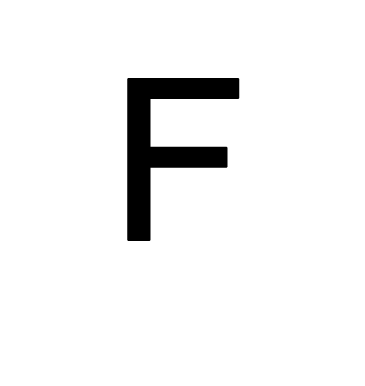
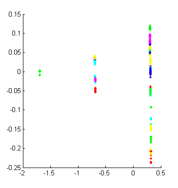
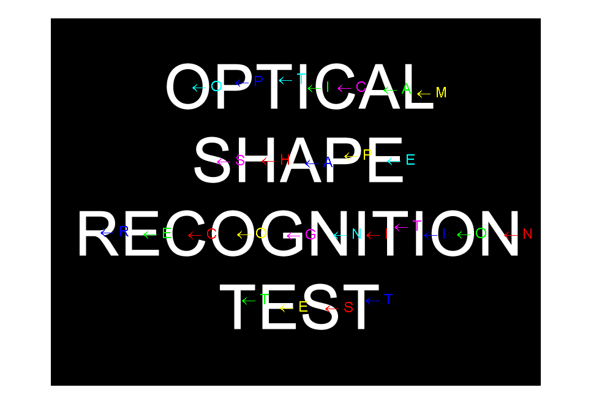
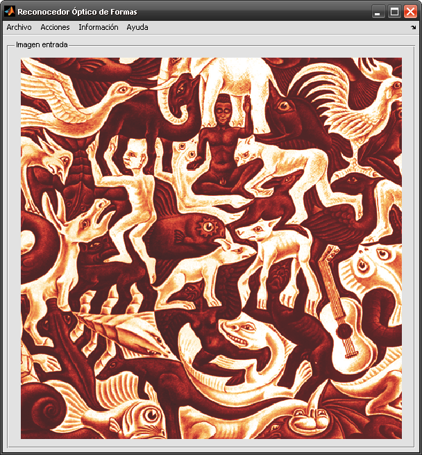

Optical Shape Recognition
Created by Javier Matos Odut
This is a demonstration about an optical shape recognition created with MATLAB using different toolboxes:
- Neural Network - the recognition engine of this tool was created using a multilayer neural network.
- Image Acquisition/Image Processing - with this two toolboxes we can extract shapes within images and analyze their properties to create the input needed to the neural network.
I have created some useful functions to extract advanced properties of shapes explained in the literature of computer vision and image processing. Harris corner detector is an example of function done to extract properties from shapes.
http://en.wikipedia.org/wiki/Corner_detection
Contents
1. Extract properties from shapes
Suppose that we have a folder with binary images. Each image contains a shape that we want to recognize. The first step is to extract characteristics from shapes within images.
% A binary image example imshow('F.png') % Characteristics extraction imagesPath = '/home/myuser/symbols/characters'; exhaustive = true; % extract more characteristics from shapes progressBar = false; % show a progress bar verbose = true; % verbose output [Map,Data] = performCharacteristicsExtraction(imagesPath, exhaustive, progressBar, verbose);
Analizando imagenes Analizando imagen A.png Analizando imagen B.png Analizando imagen C.png Analizando imagen D.png Analizando imagen E.png Analizando imagen F.png Analizando imagen G.png Analizando imagen H.png Analizando imagen I.png Analizando imagen J.png Analizando imagen K.png Analizando imagen L.png Analizando imagen M.png Analizando imagen N.png Analizando imagen O.png Analizando imagen P.png Analizando imagen Q.png Analizando imagen R.png Analizando imagen S.png Analizando imagen T.png Analizando imagen U.png Analizando imagen V.png Analizando imagen W.png Analizando imagen X.png Analizando imagen Y.png Analizando imagen Z.png
2. Analyze data acquired from shapes
We can perform a principal component analysis using extracted data from shapes to know if differences are enough to recognize shapes.
http://en.wikipedia.org/wiki/Principal_component_analysis
% PCA computation [coeff, score] = princomp(Data.input'); clf; hold on; % Colors colorBase = [ 'b' ; 'g' ; 'r' ; 'c' ; 'm' ; 'y' ]; for i=1:unique(max(Data.output)) plot( score(Data.output == i,1), ... score(Data.output == i,2), ... '.','Color',colorBase(mod(i-1,length(colorBase))+1)); end
3. Training neural Network
Now that we have the input and the desired output we can perform the learning process using the neural network.
% Generates the trained neural network
Engine = performLearning(Data);
4. Shape recognition
Now we load the image that contains shapes that we want to recognize.
% Read input image image = imread('test.png'); % Extract shapes from input image Shapes = performRecognition(Engine, Map, image);
5. Show results
clf; imshow(image); hold on; % For every shape in the image we show the associated label for i=1:length(Shapes) text(Shapes(i).Centroid(1),Shapes(i).Centroid(2),[' \leftarrow ',Shapes(i).Label],'FontSize',18,'Color',colorBase(mod(i-1,length(colorBase))+1)); end
Graphical User Interface
The graphical user interface let you perform previous steps in a friendly way. To start it run launch.m file that is in the main directory.
